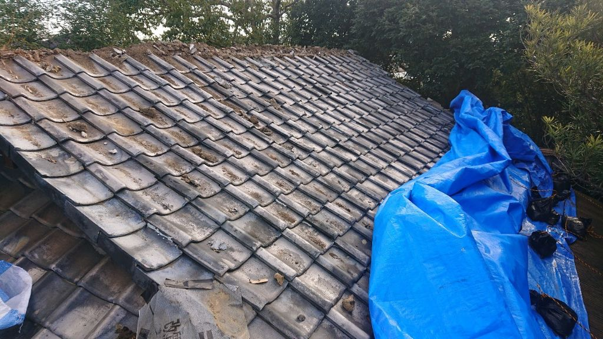

地震で瓦がズレる理由｜耐震性を高めるための対策と点検ポイント
公開日：2026年2月18日
地震で瓦がズレる3つの原因と、二次被害を防ぐ対策を専門家が解説。揺れに強い屋根にする方法もご紹介します。

地震で被害を受けた瓦屋根とブルーシート応急処置
地震後、こんな心配ありませんか？
- 揺れの後、屋根から「カラカラ」と音がした
- 瓦がズレているような気がするけど、上れないから確認できない
- 地震のたびに屋根が心配で、どう対策すればいいかわからない
- 築年数が経っていて、次の地震が不安
地震が多い日本では、瓦屋根の耐震性は非常に重要です。
揺れによって瓦がズレると、雨漏りだけでなく、瓦の落下による人身事故のリスクもあります。町田市や横浜青葉区でも、地震後に「屋根が心配」というご相談が増えています。
地震で瓦がズレる3つの理由
1 固定方法が古い（釘やワイヤーで固定されていない）
昔の瓦屋根は、瓦同士の重なりと重さで固定されているだけで、釘やビスで留められていません。
揺れによって簡単にズレてしまう構造です。特に築30年以上の住宅は要注意。
2 経年劣化で瓦が浮いている
長年の風雨や温度変化で、瓦を支える土や漆喰が劣化していると、瓦が浮き上がります。
- 土葺き工法の土が縮んで隙間ができる
- 漆喰が剥がれて、棟瓦がグラグラする
- 防水シートの劣化で下地が弱くなる
浮いた状態で地震が来ると、ズレやすく、落下の危険性も高まります。
3 屋根の形状や勾配が揺れに弱い
屋根の形や角度によって、揺れの影響の受けやすさが変わります。
ズレやすい屋根の特徴：
- 急勾配の屋根：重力の影響で下にズレやすい
- 棟が長い屋根：棟瓦に揺れが集中しやすい
- 複雑な形状：谷部や隅部でズレが発生しやすい
地震に強い瓦屋根にする4つの対策
対策① 瓦を釘・ビスで固定する（ガイドライン工法）
2001年以降、建築基準法で瓦の緊結が義務化されました。
すべての瓦を釘やビスで固定することで、震度5強程度の揺れでもズレにくくなります。
💰 費用目安（30坪）
80万円〜150万円
※既存瓦を再利用する場合
対策② 棟の強化（強化棟・耐震棟への交換）
棟（屋根のてっぺん）は揺れの影響を最も受けやすい部分です。
従来の土を使った工法から、軽量で強固な強化棟に交換することで、地震に強くなります。
- 土を使わないので軽量化できる（約1/4の重さ）
- ステンレスビスで固定するのでズレにくい
- 漆喰の劣化リスクが減る
💰 費用目安（10mの棟）
30万円〜50万円
対策③ 軽量な屋根材への葺き替え
瓦屋根の重さは、地震の揺れを大きくする原因の一つです。
屋根材の重量比較（30坪の場合）
- 瓦屋根 約4,000kg
- スレート屋根 約2,000kg
- 金属屋根（ガルバリウム） 約600kg
軽量な金属屋根に葺き替えることで、建物への負担が減り、揺れも小さくなります。
💰 費用目安（30坪）
150万円〜250万円
対策④ 定期的な点検とメンテナンス
地震の前に、劣化箇所を見つけて修理しておくことが最も重要です。
点検すべきポイント：
- 棟瓦の漆喰：剥がれやひび割れがないか
- 瓦のズレ・浮き：目視で確認
- 谷部・隅部：ズレが起きやすい箇所
- 割れ・欠け：放置すると雨漏りの原因に
推奨点検頻度：5年に1回、または大きな地震の後
地震後の瓦点検、自分でやるのは危険
絶対にやってはいけないこと
-
屋根に登って確認する
地震で瓦がズレている場合、踏んだ瞬間に落下する危険があります。
-
ハシゴで屋根を覗く
余震でハシゴが倒れて転落する事故が多発しています。
-
ズレた瓦を自分で直そうとする
専門知識がないと、かえって状態を悪化させることがあります。
プロの業者による点検を依頼しましょう。
当社では、地震後の無料点検を実施しています（町田市・横浜青葉区・麻生区・稲城市・日野市エリア）。ドローンを使った安全な点検も可能です。
地震対策にかかる費用まとめ
| 対策内容 | 費用目安（30坪） | 効果 |
|---|---|---|
| 瓦の釘・ビス固定 | 80〜150万円 | 震度5強でもズレにくい |
| 強化棟への交換 | 30〜50万円 | 棟のズレ・崩れを防止 |
| 金属屋根への葺き替え | 150〜250万円 | 軽量化で揺れを軽減 |
| 部分修理（漆喰など） | 10〜30万円 | 劣化箇所の補修 |
築30年以上で一度も耐震対策をしていない場合は、大きな地震が来る前に早めの対応をおすすめします。
よくある質問
地震保険で瓦の修理費用は出ますか？
地震によるズレや破損は地震保険の対象になります。ただし、以下の条件があります：
- 被害が一定規模以上（全損・大半損・小半損・一部損）
- 地震発生から一定期間内に申請
- 被害写真や見積書が必要
※経年劣化や台風被害は火災保険の対象となる場合があります。
瓦の耐震対策、補助金は使えますか？
多くの自治体で耐震改修の補助金制度があります。
対象例（自治体により異なる）
- 築年数が一定以上（昭和56年以前など）
- 耐震診断を受けている
- 指定の工事内容（瓦の軽量化など）
町田市・横浜市・川崎市など、各自治体の窓口でご確認ください。当社でも補助金申請のサポートを行っています。
築何年くらいから地震対策が必要ですか？
築30年以上の瓦屋根は、早めの点検をおすすめします。
特に2001年（平成13年）以前に建てられた家は、瓦の緊結義務化前なので、ほとんどが釘やビスで固定されていません。
また、漆喰や防水シートも劣化している可能性が高いため、トータルでの耐震診断が必要です。
まとめ：地震に備えて、今できる対策を
地震で瓦がズレる原因は、固定方法の古さ・経年劣化・屋根形状
耐震対策は、釘・ビス固定、強化棟への交換、軽量化、定期点検
地震後の点検は、必ずプロに依頼（屋根に登るのは危険）
築30年以上の瓦屋根は、早めの耐震診断を
補助金制度を活用すれば、費用負担を軽減できる
「次の大地震が来る前に、対策しておけばよかった…」と後悔しないよう、今できることから始めましょう。